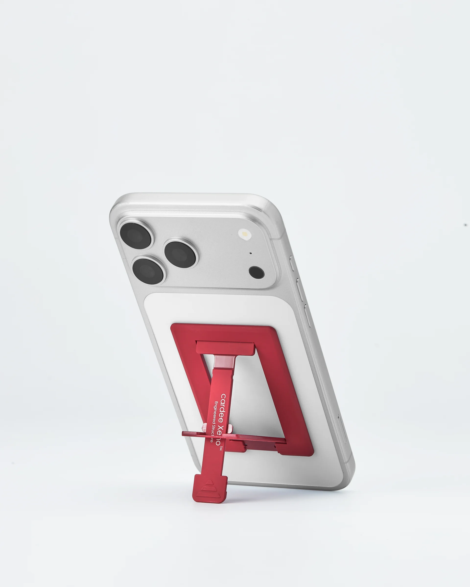
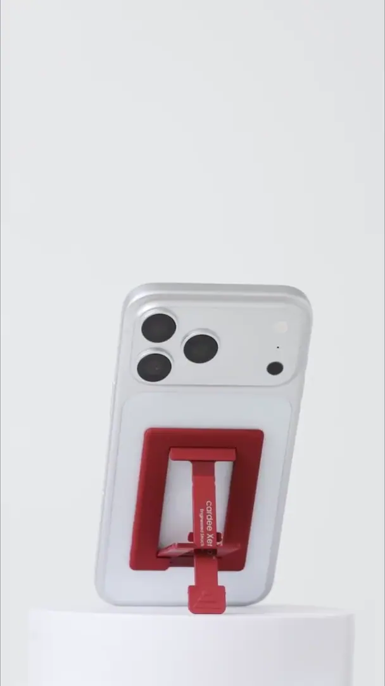
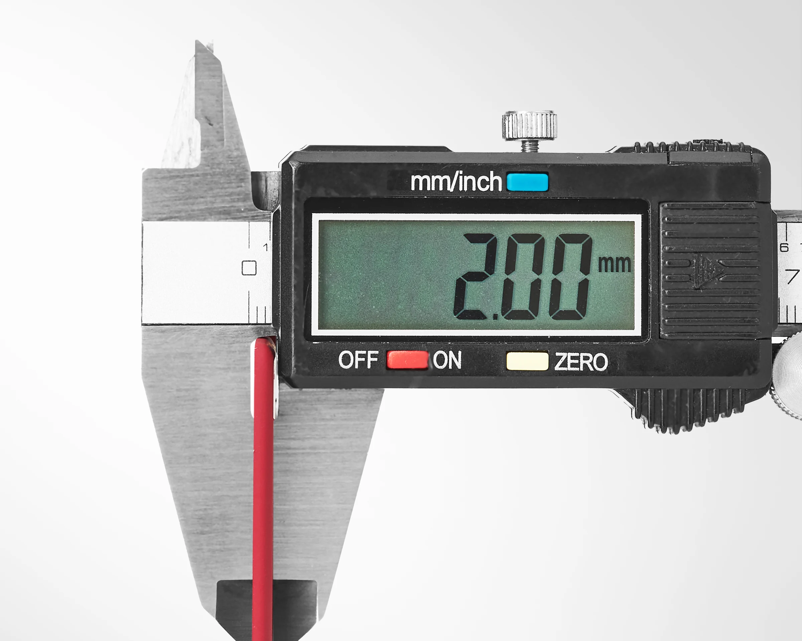
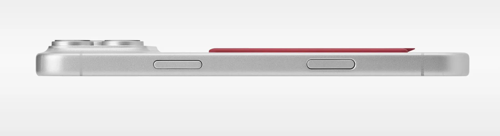
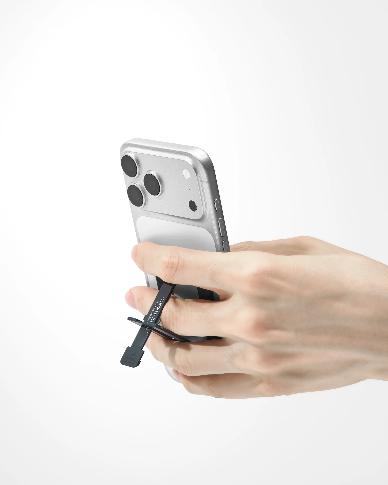
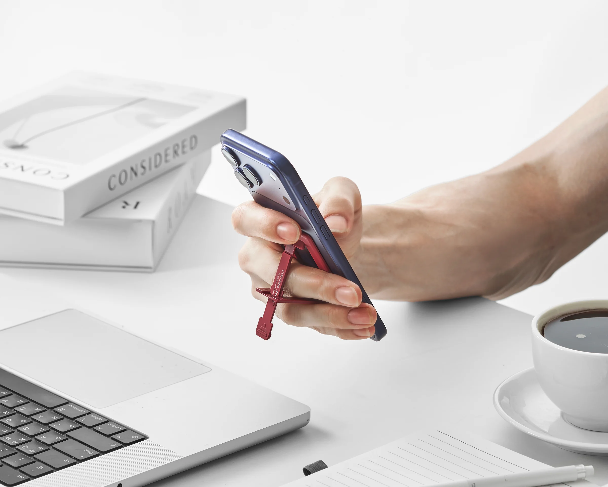
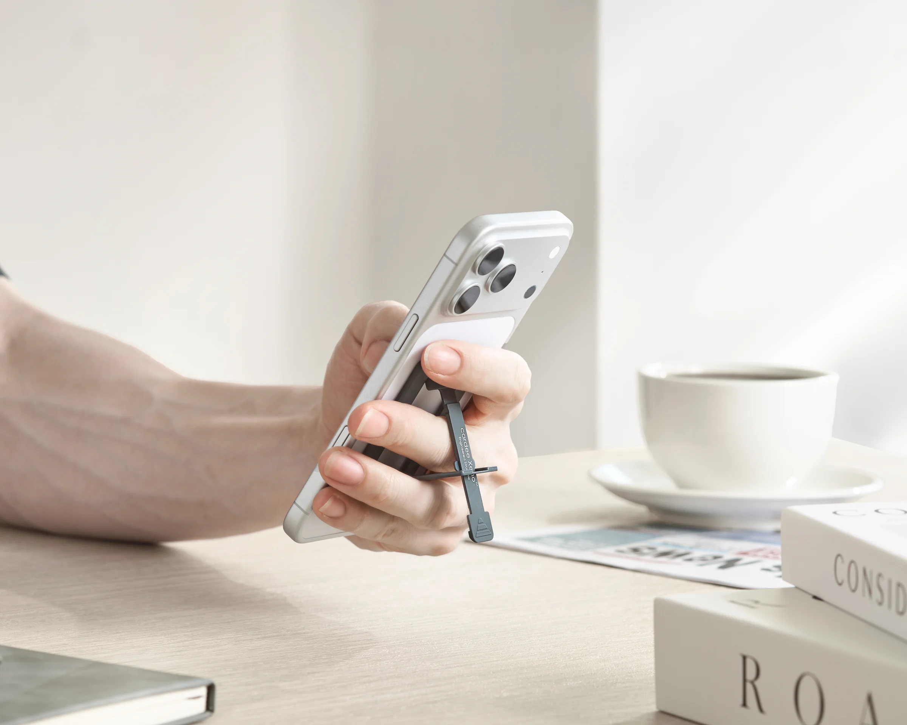
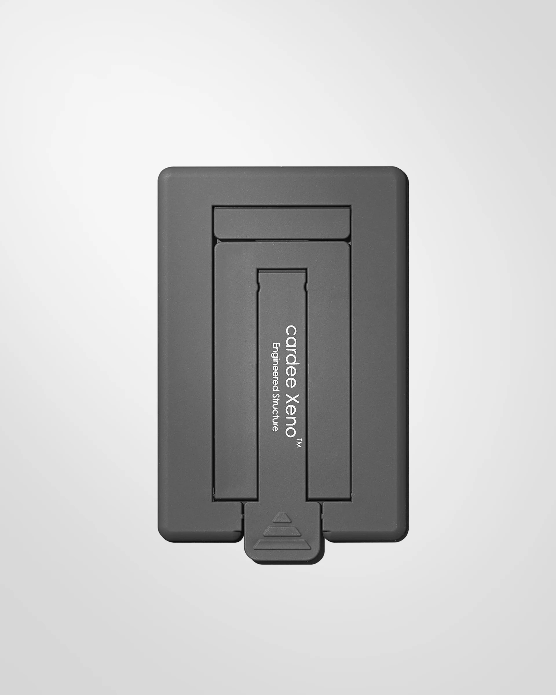
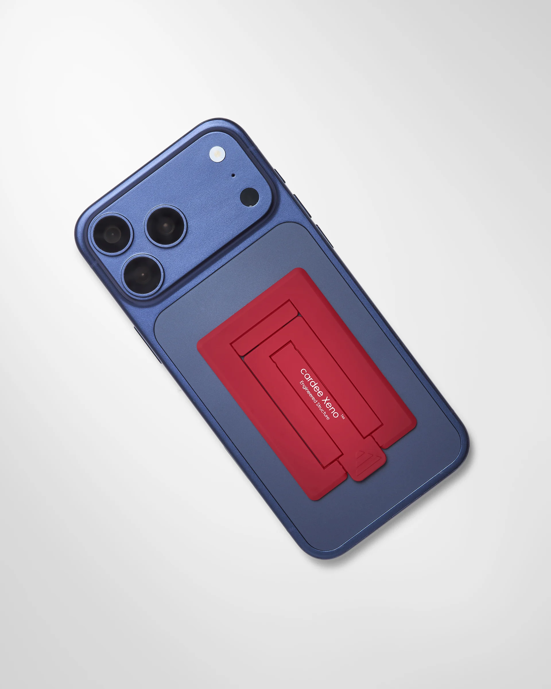

01 Every angle
얇게 붙어,
형태를 해치지 않게.
스크롤을 움직여 제품의 모든 각도를 직접 확인해 보세요.
The 2.00mm phone stand
붙인 줄도 모르게 얇고,
필요한 순간 바로 펼쳐집니다.

Small object, considered deeply
스마트폰의 형태를 해치지 않는 두께와 매일 반복해도 자연스러운 구조. cardee Xeno는 늘 함께 있다가, 사용할 때만 존재감을 드러냅니다.
Designed & made
01 Every angle
스크롤을 움직여 제품의 모든 각도를 직접 확인해 보세요.
02 Always attached
정면에서 측면까지, 제품의 얇은 실루엣이 스마트폰의 형태를 따라 자연스럽게 이어집니다.
03 One move, ready
한 번의 동작으로 펼쳐지는 스탠드. 영상을 보고, 통화하고, 알림을 확인하는 각도가 완성됩니다.
Core details
얇기, 부착, 그립. 매일 손에 닿는 세 가지 경험을 하나의 정교한 구조 안에 담았습니다.

Measured profile · 2.00 mmThinness
카메라보다 낮은 프로파일. 손안에서도, 주머니 속에서도 불필요한 부피를 만들지 않습니다.

Attached profile · Ultra slimAttachment
스마트폰의 면과 자연스럽게 이어집니다. 늘 함께 있지만, 사용할 때만 존재감을 드러냅니다.

Stand & grip · Everyday readyGrip
스탠드를 펼치지 않은 순간에도 손가락을 걸어 편안하고 안정적인 그립을 만듭니다.
Everyday, everywhere

시선이 머무는 편안한 각도.

어디서든 자연스럽게.
Choose your tone
스마트폰과 취향에 자연스럽게 이어지는 컬러를 선택하세요.

Made with intention
반복해서 펼치고 접는 구조부터 부착 안정성, 손끝에 닿는 촉감까지. 작은 제품이기에 더 꼼꼼하게 설계하고 만들었습니다.
